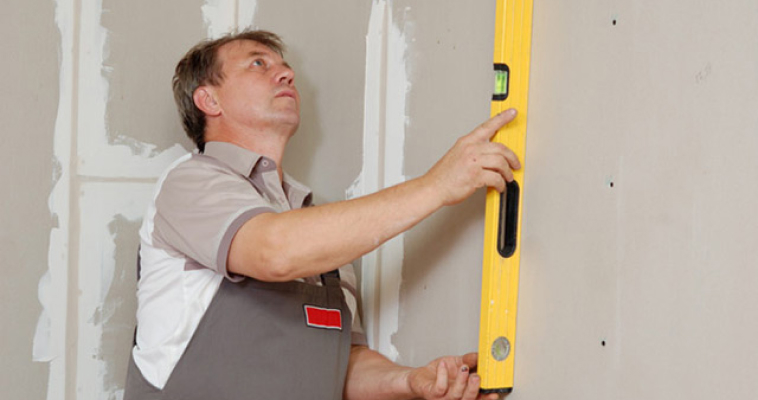
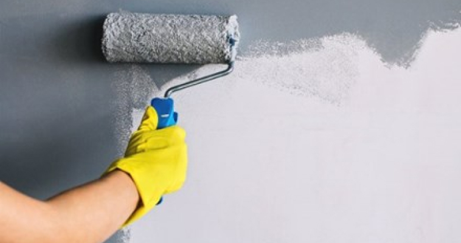

МОНТАЖ ДЕКОРАТИВНЫХ ПАНЕЛЕЙ МЕТОДОМ «СТЫК В СТЫК»
Деревянная многослойная паркетная доска – это изделие, изготовленное из 100% древесины. Конструкция этой доски очень устойчива к изменениям температуры и влажности. Не один, а три слоя древесины, уложенные в перекрестную конструкцию, придают доске высокую стабильность размеров. Каждая паркетная доска Barlinek представляет собой готовое изделие с отделанным верхним слоем, пригодным для использования сразу после монтажа.
ВАЖНО:
Не забудьте полностью проверить груз на наличие повреждений по прибытии, до начала установки. О любом повреждении должно быть сообщено немедленно на plydex@mottex.ru
ПРЕДУПРЕЖДЕНИЕ:
Неправильная установка деревянных панелей может привести к аннулированию вашей гарантии. Защитите вашу гарантию и инвестиции, всегда скрепляя и склеивая все Деревянные стеновые панели.
ШАГ 1
Убедитесь, что стена ровная и ровная. Если нет, обратите внимание на все различия в Высоте и / или ширине, и соответственно измените макет.
Исправьте любые неровности на поверхности вашей области установки, которые могут влияет на то, как будут укладываться плитки.
Исправьте любые неровности на поверхности вашей области установки, которые могут влияет на то, как будут укладываться плитки.

ШАГ 2
Покрасьте желаемую область установки в черный матовый цвет, чтобы скрыть возможные пробелы между или внутри плитки из-за расширения и сжатия с течением времени. Разрыв в 1/16 дюйма - это нормально между плитками.
Для краев, используйте черную ленту, чтобы скрыть недостатки краски, если необходимый.
Для краев, используйте черную ленту, чтобы скрыть недостатки краски, если необходимый.

ШАГ 3
Оставьте зазор 1/4 "по периметру вашей области установки, в том числе любая отделка, чтобы обеспечить расширение и сжатие продукта. Используйте прокладки для равномерное разделение при необходимости.
ШАГ 4
Определите, в каком направлении вы хотите установить плитку - горизонтальном, вертикальном или диагональном.
Положите два ряда на пол перед установкой, чтобы спланировать стену. определять и отметьте начальные сокращения.
ВАЖНО: Если требуется центрированная установка, отметьте центральную часть и отмерить до краев стены, чтобы обе стороны были эквивалентны сокращение избытка.
Положите два ряда на пол перед установкой, чтобы спланировать стену. определять и отметьте начальные сокращения.
ВАЖНО: Если требуется центрированная установка, отметьте центральную часть и отмерить до краев стены, чтобы обе стороны были эквивалентны сокращение избытка.
ШАГ 5
Измерьте и отметьте горизонтальные и вертикальные направляющие, соответствующие вашей плитке размер с использованием лазерного уровня и меловой линии.
ШАГ 6
Чтобы подготовиться к розеткам, выключателям или другим предметам, расположите другие ряды
плитка, требующая дополнительных порезов на полу. Отметьте все разрезы, необходимые один раз уровень. Смотрите дополнительные инструкции по установке молдингов. Обратите внимание, что
последний ряд также может быть необходимо вырезать.
ШАГ 7
Чтобы установить горизонтально, начните в левом углу с задней панели панель обращена в направлении установки. Определите и отметьте начальные разрезы. Начиная слева (рисунок A), поместите заднюю панель видимого жесткого диска в право. Начиная справа, (рис. B) поместите видимую панель Задняя панель слева.
ШАГ 8
Отрежьте лишний материал вкладки от плитки, чтобы быть вровень с краем области установки. Обратите внимание, что при резке может упасть из-за вибрации пилы. Если это произойдет, просто клей обратно, а затем гвоздь сзади, чтобы надежно закрепить его
ШАГ 9
Добавьте строительный клей на заднюю панель первой плитки. Поместите начальная плитка в начальной точке вашей установки.
ШАГ 10
Как только плитка выровнена и выровнена, закрепите открытую заднюю панель как минимум
4 # 18 Калибровочные гвозди. (ДОПОЛНИТЕЛЬНО: При использовании винтов с плоской головкой обязательно используйте сначала нужно сверлить, чтобы просверлить отверстия под поверхностью.